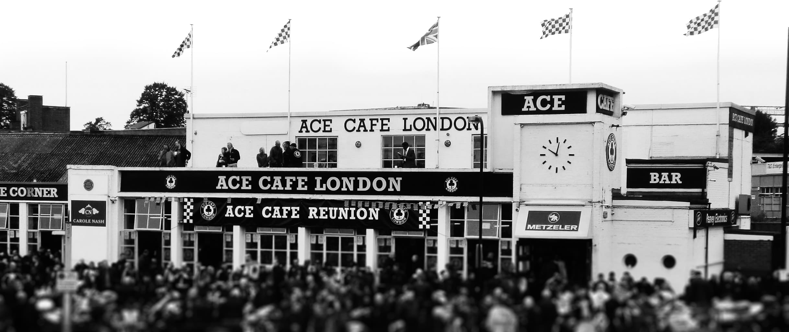

Bienvenido a Bar London Bridge
Historia de Londres
La ciudad no aparece hasta después de la conquista romana. El dominio romano se extendió desde el siglo I d.C. hasta el siglo V, en que cayó el Imperio. En el siglo III, Londinium, con su puerto, era un importante núcleo de población, con unos 50.000 habitantes
Desde el siglo XVI y hasta mediados del siglo XVIII, Londres se benefició de la centralización política y de la expansión del comercio marítimo desarrollada por los Tudor y continuada por los Estuardo. Durante el reinado de Enrique VIII la ciudad contaba unos 100.000 habitantes. A mediados del siglo XVII ascendían a 500.000.


Historia
Situado en la calle Nou de la Rambla, el London Bar abrió sus puertas en 1910. Lugar de peregrinaje para artistas como Dalí, Picasso o Antonio Gades, es una joya única de Barcelona y un bar que ha mantenido su identidad todos estos años. Actualmente se puede tomar una copa disfrutando de su ambiente vintage en un concierto a ritmo de jazz o blues.
En pleno siglo XXI, en medio del Raval, un local que parece sacado de los años veinte con un trapecio que cuelga del techo llama la atención de todos los que pasan por la calle: se trata del emblemático London Bar, que desde hace más de cien años funciona como un lugar de encuentro obligado para todos los amantes de la música y el arte.